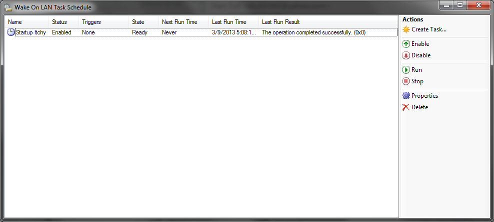
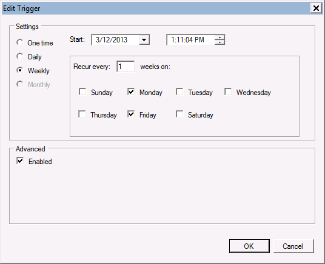

WakeOnLAN Help
Aquila Technology
Version 2.7
Scheduler
The WOL Scheduler lets you schedule wakeups and shutdowns to run a predetermined times, or triggered on any event that the Windows Task Scheduler supports. The scheduler is only supported on Vista or higher desktops, or Server 2008 or higher on servers. WOL does not have to be running for scheduled tasks to run. In fact, you do not even need to be logged in.
Open the task scheduler from the Schedule button

Click the "Create Task..." button to create a new scheduled task
You will need to enter a valid userid and password for the task to run. If your task involves a computer shutdown, your userid MUST have the necessary priviliges to shutdown the computer.

Select a trigger for your task
Triggers determine when your task will run. It may run one time, or every Monday and Friday at 1:11 pm, as in this example.

Select actions for your task
Actions determine what the task is going to do. The scheduler can perform many actions, including wakeups, shutdowns, popping up messages and sending notification emails.


AquilaWOL uses the Windows Task Scheduler. If you are an advanced user, you may want to directly access the tasks in Windows. You will find them in Task Scheduler under Aquila Technology / WakeOnLAN.